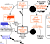
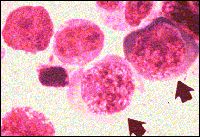

B12/Folate Problem set
Question 8: B12deficiency
Tutorial to help answer the questionAbnormal findings in patients with a vitamin B12 deficiency may include:
A. methylmalonic aciduria
B. homocystinuria
C. megaloblastic anemia
D. hypersegmented nuclei in leucocytes
E. sensory neuropathy
Tutorial
The folate trap strikes again!
B12Uptake Animation (3.4MB)
 PDF of Overview figure
ThIS file IS in Adobe Acrobat (PDF) format. The advantage the PDF version is that printing is of much better quality than printing directly from your web browser. If you have not installed and configured the Adobe Acrobat Reader you can download the FREE Acrobat Reader from the Adobe site.
This module has now come full circle from the first question — lack of B12 traps folate in the N5-methyl form. For the affected patient, this means that the functions of both B12 and folate are disrupted. To explain the symptoms:
| 1) | methylmalonic aciduria - This is perhaps the only real way to distinguish a B12 deficiency from a folate deficiency (biochemically, at least). The enzyme methylmalonyl CoA mutase requires B12 (but not folate) as a cofactor, so its reactant (methylmalonyl CoA) accumulates only in a B12 deficiency. Incidentally, the CoA group is stripped off for other uses and free methylmalonic acid is what leaves the cell for excretion in the urine. | |
| 2) | homocystinuria - This and the next three symptoms can all be found in both B12 and folate deficiencies. This particular symptom is perhaps the easiest to explain, since the enzyme methionine synthase requires a form of both B12 and folate. This is also where the folate trap occurs, since N5-methyl THF can only return to the folate pool by donating its methyl to B12. Obviously this cannot occur when there is no B12 around. [To be continued in 5) below...] | |
| 3) | megaloblastic anemia - One of the main reasons for this is the requirement of folate derivatives for DNA/RNA synthesis. This shows up in reticulocytes because these cells must be constantly replenished via new synthesis of DNA and RNA. Exactly why impaired DNA synthesis causes these cells to be "megaloblastic" is beyond the scope of this discussion. | 
Megaloblastic anemia |
| 4) | hypersegmented nuclei in leucocytes - This finding is presumably also related to impaired DNA synthesis. Again, the only part of the mechanism we will consider here is the requirement for folate derivatives in DNA/RNA synthesis. | |
| 5) | sensory neuropathy - Continuing the story from 2), the methyl group from N5-methyl THF is supposed to pass on to form the following compounds (in order): methyl-B12 -> methionine -> S-adenosyl methionine (SAM) -> neural membrane lipids (see overview figure or tutorial figure for question # 3 for a depiction of this). Obviously, the lack of B12 nips this in the bud pretty effectively! Myelin sheaths are particularly affected by this interruption in the supply of membrane lipids, presumably due to their high rate of turnover. | |


Department of Biochemistry and Molecular Biophysics
The University of Arizona
Revised: October 2004
Contact the Development Team
http://biology.arizona.edu
All contents copyright © 2000. All rights reserved.